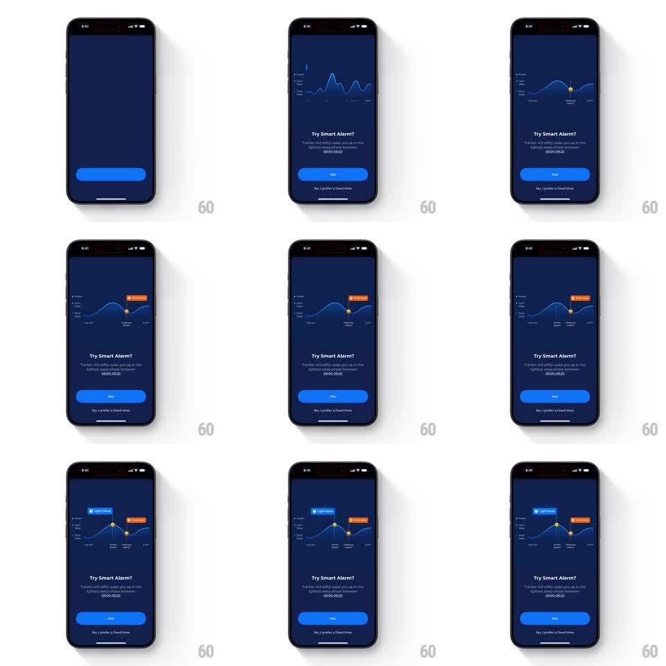

Media
Frame-by-frame

Rebuild this animation 1:1: ShutEye's smart alarm pitch - a sleep-cycle wave graph draws in, then alarm markers pop onto the curve with stage tooltips ("Light Sleep", "Awake") explaining the wake window.

Rebuild this animation 1:1: ShutEye's smart alarm pitch - a sleep-cycle wave graph draws in, then alarm markers pop onto the curve with stage tooltips ("Light Sleep", "Awake") explaining the wake window.
## Integration
Integration: stack-agnostic spec - springs given as stiffness/damping, timed motions as duration + curve; map every value to your framework and animation library of choice.
## Scene
A dark blue onboarding page: a sleep-cycle graph (a smooth wave crossing Awake / Light / Deep stages across the night), the headline "Try Smart Alarm?", copy explaining the tracker wakes you in the lightest stage between 08:00-08:30, a "Yes!" button, and a "No, I prefer a fixed time" link. Marker pins with stage labels sit on the curve.
## Motion spec
Pattern: graph draw with staggered marker pop-ins, ~2.5s.
- The graph's wave draws left to right (1.2s, ease-in-out), stage bands fading in behind it (300ms).
- The first marker pin drops onto the curve (spring stiffness 380 damping 16) and its orange tooltip pops beside it (scale 0.6 to 1, 200ms).
- A second marker follows 300ms later with the same drop-and-pop, then a blue "Light Sleep" tooltip marker on the curve's rising edge.
- The headline, copy, and buttons fade up in turn (250ms each) after the markers settle.
## Calibration
- Markers land exactly on the curve, pins pointing down to their sample points.
- The tooltips' stagger reads left to right, following the night.
## Reduced motion
Graph and markers appear static.
## Don't miss
- The wake-window markers sit on the rising (lightening) slope near the right edge - that is the whole pitch.
- Tooltip chips are filled and colored (orange, blue) with small pointer tails.